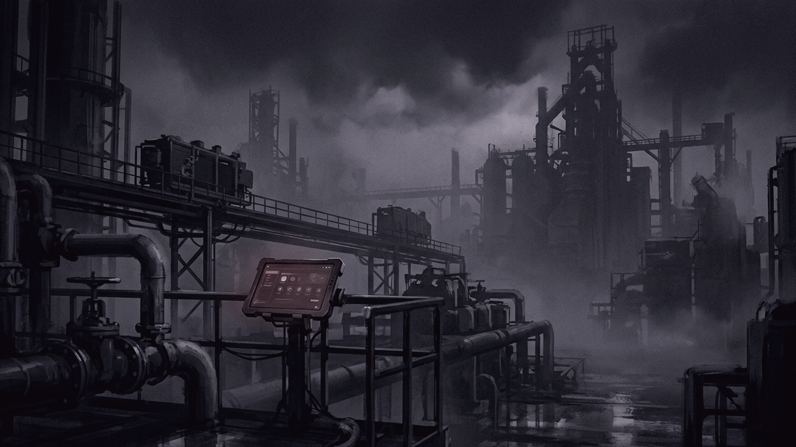
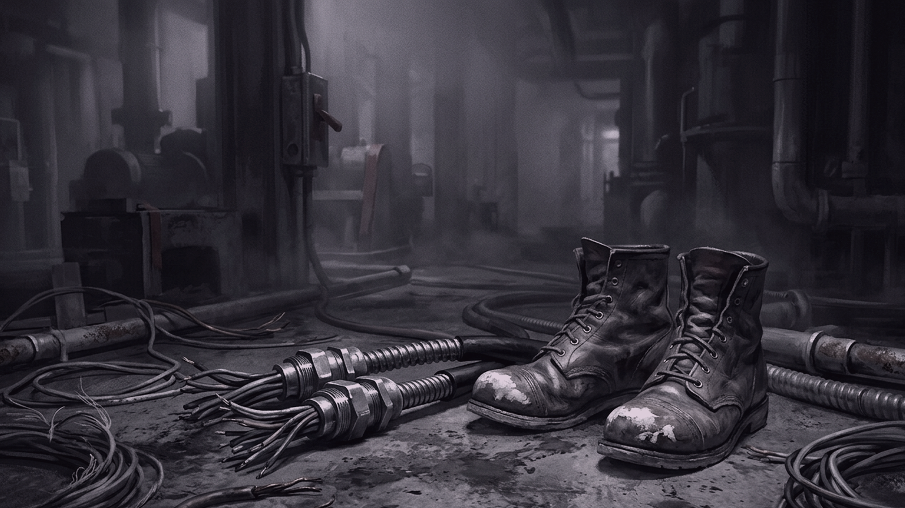
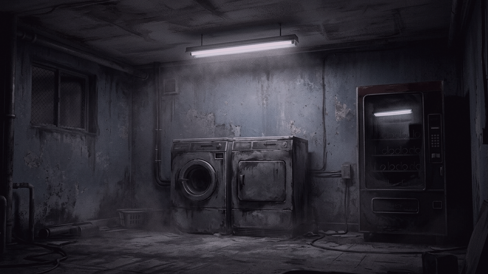
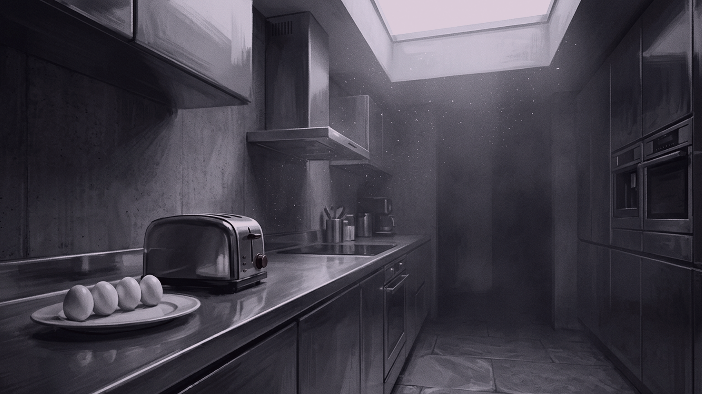

Cyrus Sandoval poured himself a lukewarm cup of coffee from the steel thermos on his truck’s passenger seat. The metal casing was caked in dried sea salt and faint grease rings from sixty nights on the headland. He had taken this watchman job at the OceanView Submarine Cable Landing Station for the quiet—a clean break from Sacramento after Sarah packed her bags and left him with half a house.
It was 3:17 a.m. The Pacific Ocean lay invisible beyond the security fence, three thousand miles of cold black water pressing against three feet of poured concrete and reinforced steel. A dozen thin stars pricked the marine fog above the bluffs.
He locked his truck. The driver’s side hinge squeaked twice against the salt air.
The main control building was a low box of ribbed aluminum and corrugated steel. Sodium lights overhead cast yellow circles across the pitted asphalt. Cyrus knew the ground by foot-feel: two hundred paces from the gate to the outer hatch, three steps over the raised threshold, four paces to the keycard reader. He had walked it every night for six months.
He stepped into the airlock. The pneumatic seal hissed, equalizing pressure with a heavy thump that vibrated through the heels of his boots.
Inside, the control room smelled of ozone, wet concrete, and scorched dust. Rack after rack of servers hummed in the dark, their blue LED status displays glowing softly against the linoleum floor.
Cyrus unclipped his key ring from his belt loop. There was the brass key for the diesel generator room, the square-head key for the cable repair shack, and the master key for the airlock bypass. Between them hung a heavy iron key stamped D-9. In six months of six-day shifts, he had never found a lock that fit it. Not on the breaker boxes, not on the server cages, not on the rusted access hatches along the seawall.
He tapped his tablet screen to run the hourly routine check. Signal strength on the subsea fiber bundles read steady at one hundred gigabits per second. Ocean depth sensors logged a seabed temperature of 3.8 degrees Celsius. The metrics scrolled past in clean vertical columns—numbers and graphs that meant nothing to him, but proved the continent was still talking to the rest of the world.
Cyrus walked over to the galley cutout to fill his water mug. On the stainless steel counter sat a white porcelain plate holding two sunny-side-up eggs and three strips of bacon. Steam rose from the yellow yolks into the cool air.

Cyrus stopped.
His stomach pinched with hunger, but he frowned down at his wrist. It was 3:22 a.m. He had eaten a cold turkey sandwich at his kitchen table in town at 1:00 a.m. before driving out to the coast.
Someone left a midnight snack.
He leaned down to look closer. The eggs were freshly cracked, the translucent edges uncured by heat lamps. The bacon curled crisp at the ends, smelling of smoked hickory and hot grease. Nobody else was scheduled on the night shift. The day manager, Miller, had logged out at 1800 hours and driven his sedan back to the highway.
Cyrus set the plate back on the edge of the counter. He left it there, untouched.
He checked the comms console for any incoming transmissions from the regional office in Portland or the field maintenance teams, but the queue was empty. The station ran on fixed schedules. Everyone knew what needed doing, and when. Cyrus went through the motions of his rounds, his mind drifting ahead to the end of his shift: twenty minutes to finish the paperback western in his glovebox, maybe a hot shower in the crew quarters behind the server racks if the water pressure held out.
The wall-mounted intercom crackled.
A sharp burst of white noise filled the room, like dry sand poured over concrete. Cyrus turned. The red transmit light on the wall unit remained dark, but the speaker cone hummed with open static, as if someone were holding a microphone key open on the other end of the wire.
He waited five seconds. Ten.
Nothing followed. Just the dry rasp of an open line.
Cyrus rubbed his thumb over the bridge of his nose.
Faulty ground wire in the amplifier.
He picked up his heavy flashlight and walked down the central corridor toward the maintenance bay to complete the 0400 gear check. The air grew colder near the foundation footings, smelling of damp lime and stagnant water.
On the concrete floor beside the armoured cable terminations sat his spare work boots. They were old Red Wings, the leather scuffed white at the steel toes, the rubber soles worn down at the outer heel.
He unlaced his current boots, kicked them off, and slid his feet into the spares. The leather was supple, already molded to the arches of his feet.

He stood up and pulled the laces tight.
A sudden spike of cold electricity shot through his calves—a sharp, prickling numbness that climbed from his ankles to his knees like needles pushed into muscle.
Cyrus grabbed the edge of a steel shelving unit.
You slept four hours in three days. It is muscle fatigue.
He bent his knees twice until the thrumming settled into a dull, vibrating ache. The armoured cable terminations were dry and bolted down tight. He made a note on his clipboard that the backup lithium batteries in the emergency radio were due for testing. Maybe that was what was feeding feedback into the electrical lines.
He stepped out of the maintenance bay and returned to the main control area. The light felt dimmer now, the blue LEDs casting longer shadows between the server racks.
He picked up the heavy plastic microphone of the marine-band radio console. He clicked the dial to channel 16, pressed the push-to-talk button, and cleared his throat.
"Hello, this is the OceanView Submarine Cable Landing Station. Can anyone hear me?"
The speaker hissed back at him. Nothing.
He switched the selector dial three notches to the right, onto the commercial frequency.
"Hello, this is the OceanView Submarine Cable Landing Station. Can anyone hear me?"
Static.
He hung the microphone on its brass hook. He pulled his cell phone from his belt holster. The screen lit up with full signal bars for the satellite link, but when he tapped the keypad to dial out, the screen froze. The display locked on the numeric layout, an empty text field appearing at the top, waiting for a nine-digit security code he had never seen before.
Cyrus backed away from the desk.
The temperature in the room had dropped four degrees. He could see his breath forming faint, translucent clouds over the glowing indicator screens.
The satellite link is demanding a security code. It is recalibrating.
He walked into the small break area adjacent to the control room. A vending machine hummed quietly in the corner against the painted cinderblock wall.
Cyrus reached into his pocket, pulled out three quarters, and pushed them into the coin slot. He pressed B-4.
The internal coil turned with a heavy metallic click. A blue foil bag of potato chips dropped into the tray below.

He tore the corner of the bag with his teeth. The smell of rancid canola oil filled his nostrils. He chewed one chip. It tasted flat, like cardboard dipped in salt, but his stomach churned around it anyway.
Behind him, the intercom speaker on the break room wall clicked twice.
A mechanical female voice spoke through the static:
"Welcome to the OceanView Submarine Cable Landing Station... Welcome to the OceanView Submarine Cable..."
The voice paused, clicked, and repeated the phrase with exact, flat cadences.
Cyrus looked down at his wrist. His stainless steel watch had been running four minutes fast for weeks. Now, as he watched the sweep second hand, it was jumping two seconds with every tick, spinning forward into time that had not arrived yet.
The discrepancy was growing.
"Welcome to the OceanView Submarine Cable..."
The voice echoed from the hallway speaker, the galley speaker, and the main control console simultaneously.
Cyrus dropped the bag of chips.
The floor beneath his boots was no longer still. A low-frequency hum—sixty hertz, vibrating through the concrete slab—shook the water in his mug and thrummed up through his leg bones into his pelvis.
The smell of burned plastic and ozone hit his throat, thick as wet wool.
He stepped back into the main room. The intercom speaker rattled inside its metal housing on the wall.
"Welcome to..."
He reached his right hand out to hit the master breaker switch on the zinc wall box.
The moment his fingers touched the metal cover, the overhead lights strobed violently three times. Blue sparks rained down from the overhead cable trays.
Cyrus stumbled backward. His heel caught the caster wheel of his office chair.
He hit the floor hard. The linoleum burned his palms.
The lights died.
Absolute darkness filled the room. Not the soft dark of an unlit office, but a heavy, physical blackness that pressed against his open eyes like wet clay.
The temperature plummeted. Frost bloomed across the concrete floor, sticking to the skin of his hands.
He tried to push himself up, but his feet felt rooted to the spot. The hum vibrating through the soles of his shoes had turned into a physical weight, holding his legs down, locking his knees in place.
Think.
Six months of routine. The weather logs that had no entries for rain. The console display symbols that matched no known binary code. The eggs on the counter, cooked for a man who had already eaten.

A memory surfaced through the noise in his head: the lawyer’s office in Sacramento three weeks after Sarah left. The heavy mahogany desk. The smell of old paper and peppermint. The man in the grey suit sliding a thick blue folder across the wood.
"I want my affairs settled, Mr. Sandoval. You're a man of routine, I'm told."
The will.
He had not taken this job. He had been assigned to it. The contract was not an employment agreement; it was a disposition of assets.
Cyrus dragged his right hand across the frost-slicked floor until his fingers struck a small metal object beneath the lip of the main console baseboard.
He gripped it.
It was an oval key fob on a broken steel chain. He ran his thumb over the stamped face, feeling the frozen metal bite into his skin.
The number 27 was cut deep into the iron.
***
Cyrus Sandoval’s records were filed in the regional administrative office in Salem, stamped INACTIVE on the top sheet of the manila folder.
The OceanView Submarine Cable Landing Station continued to process 120 terabytes of encrypted data per minute. The weather metrics for October 14 showed a four-hour gap in barometric logs, noted in red ink on the weekly audit sheet.
The replacement watchman, Jenkins, tapped his ID card against the outer security scanner at 0600 hours.
"Mornin'," Jenkins said to the guard at the gate.
Cyrus Sandoval’s name had been drawn through with a black felt marker on the clipboard duty sheet. His metal locker had been cleared, his magnetic access badge returned to the safe. The station schedule was unchanged: generator maintenance at 0800, replacement parts ordered from the mainland.
Jenkins walked the steel catwalk above the server banks. On the main workstation, the terminal screen remained active, the cursor blinking over a blank prompt line. A heavy ring of keys lay beside the keyboard, the iron key stamped D-9 glinting under the fluorescent tubes.
The wall intercom clicked once. Static hissed from the speaker cone.
Jenkins lifted the black plastic microphone, pressed the switch, and spoke into the cold room.
"OceanView Submarine Cable Landing Station, this is Security. OceanView Submarine Cable Landing Station, this is Security."